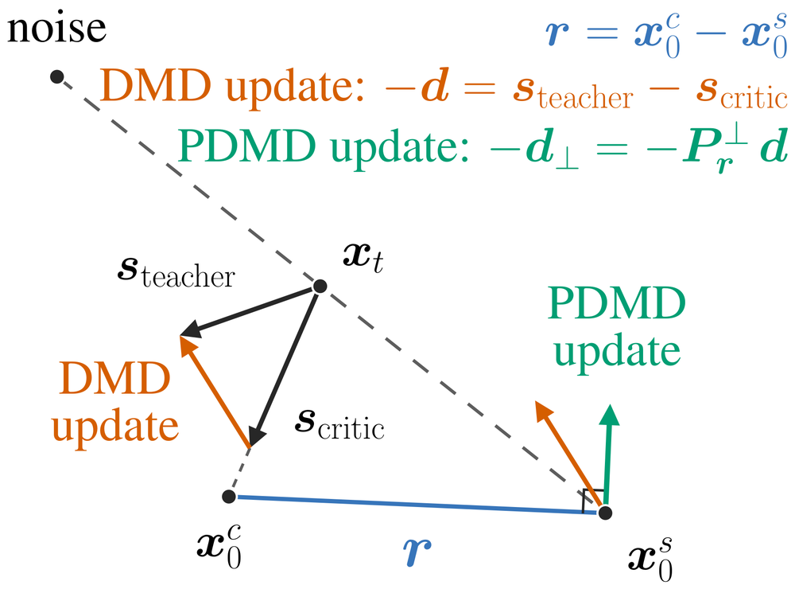

Four-step distillation for diffusion models. Every frame on this page is four network evaluations.
Click anywhere to turn on sound — browsers block audio until a page has been clicked once.
Scroll
Meet PDMD
State-of-the-art step distillation

Music: “Goliath” by Scott Buckley, licensed CC BY 4.0.
Projected Distribution
Matching Distillation
for Diffusion Models
We introduce PDMD, Projected Distribution Matching Distillation, a one-line modification that projects the DMD update onto the subspace orthogonal to the student–critic endpoint residual. That residual is an unbiased estimate of the critic's own error, so deleting it removes the part of the update the critic got wrong. Nothing else changes: no auxiliary loss, no discriminator, no second network, no extra model evaluation.
Zimo Wang1,2, Junkun Yuan2, Angtian Wang2, Haotian Yang2, Canyu Zhang2, Siyuan Yuan2, Xingchang Huang2, Bo Liu2, Yizhi Wang2, Yiding Yang2, Chongyang Ma2, Gordon Guocheng Qian2,†
1UC San Diego2ByteDance†Project lead
 Code
Code  Weights
Weights 
Gallery
MiniMax-H3-33B distilled with PDMD. 1344×768, 345 frames at 24 fps, four network evaluations each.
Read more
| Video metrics | Audio metrics | ||||||||
|---|---|---|---|---|---|---|---|---|---|
| Method | NFE | Total | Quality | Dynamic | Semantic | PQ | CE | CU | IS |
| MiniMax-H3-33B, teacher | 50 | 82.41 | 82.22 | 66.67 | 83.20 | 6.567 | 4.188 | 6.213 | 5.15 |
| MiniMax-H3-33B | 4 | 79.48 | 79.54 | 44.44 | 79.23 | 6.056 | 3.167 | 5.580 | 3.35 |
| H3 Turbo LoRA | 4 | 81.57 | 81.29 | 54.78 | 82.69 | 6.406 | 3.917 | 6.015 | 4.52 |
| DMD2† | 4 | 82.27 | 82.51 | 59.95 | 81.34 | 6.305 | 3.434 | 5.871 | 4.06 |
| DMD† | 4 | 82.76 | 82.68 | 61.76 | 83.05 | 6.381 | 3.801 | 5.931 | 4.79 |
| rCM† | 4 | 81.18 | 80.98 | 58.40 | 81.95 | 6.063 | 3.711 | 5.446 | 3.69 |
| AnyFlow† | 4 | 81.97 | 81.82 | 64.60 | 82.60 | 6.092 | 3.544 | 5.591 | 4.35 |
| PDMD | 4 | 83.17 | 83.25 | 71.83 | 82.86 | 6.530 | 4.062 | 6.180 | 4.98 |
387 prompts at 544p in mixed aspect ratios, seed 42 for every method. † marks our reimplementations, trained under the shared protocol; each reports its best checkpoint. Orange marks a column PDMD wins outright against every other four-step row.
| Method | NFE | Total | Quality | Dynamic | Semantic |
|---|---|---|---|---|---|
| Wan2.1-T2V-1.3B, teacher | 50×2 | 83.06 | 85.02 | 68.61 | 75.23 |
| Wan2.1-T2V-1.3B | 4×2 | 68.54 | 73.60 | 18.61 | 48.30 |
| rCM | 4 | 83.13 | 85.14 | 78.06 | 75.10 |
| AnyFlow | 4 | 83.54 | 85.28 | 59.44 | 76.57 |
| DMD† | 4 | 82.70 | 85.06 | 86.39 | 73.24 |
| DMD2† | 4 | 83.44 | 85.84 | 76.67 | 73.84 |
| PDMD | 4 | 83.73 | 85.89 | 89.72 | 75.09 |
944 AnyFlow-augmented VBench prompts at 480p, five seeds each. † marks our reimplementations, trained under the shared protocol; each reports its best checkpoint. Orange marks a column PDMD wins outright against every other four-step row. DMD† and PDMD differ only by the projection.